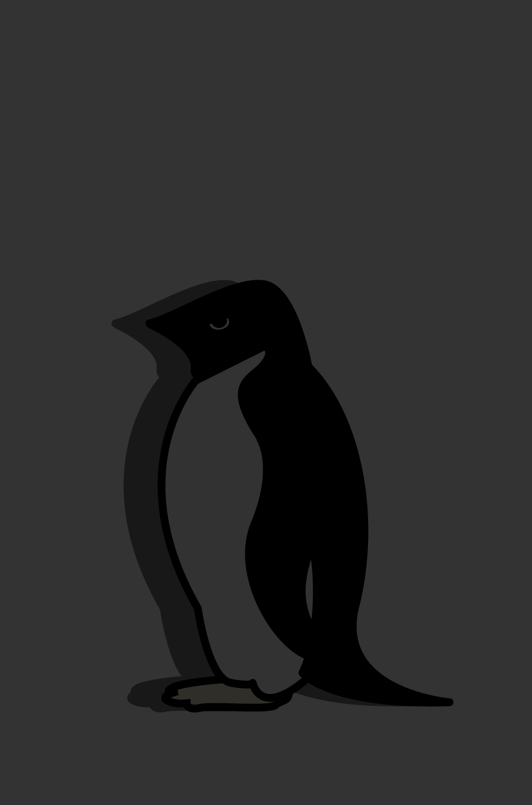
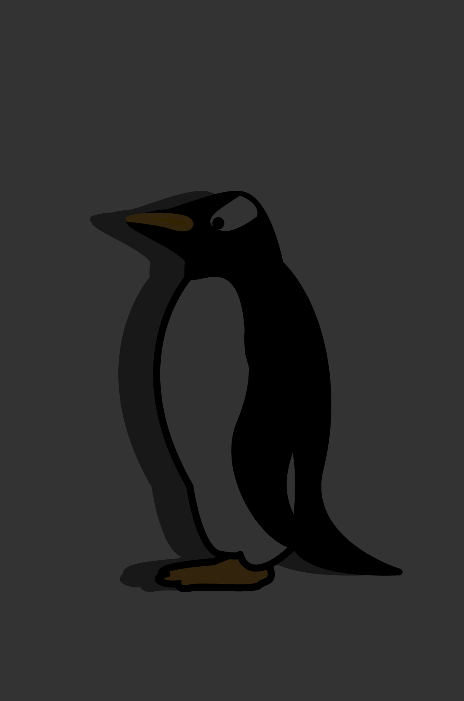

내가 해당하는 부분에 스티커를 붙여주시겠어요?
펭귄에 스티커를 붙이셨는데...
저희 “펭교”에대해서 잠시 말씀 드려도 될까요?
태초의 이땅에 내려오신
남극 지부의 6 교주님
*마우스를 올려 정보를 확인하세요.
몸길이는 약 75cm로
다리는 짧고 날개는
지느러미 모양이다.
남극 대륙 연안 전체에
걸쳐 분포하며, 그곳에만
서식한다. 펭교 선정
가장 눈이 예쁜 펭귄
펭귄들 가운데서는 황제펭귄과
왕펭귄에 이어 3번째로 큰
덩치를 가진 펭귄이다. 최대
시속 36km로 가장 빠르게수영하는 펭귄이다.
펭교 선정 새끼가
가장 귀여운 펭귄
교주님을 잡아먹고 알을 깨먹는 등
교주님들을 위협하는 사악한 악의 덩어리들
*이름에 마우스를 올려 범죄자 정보 보기

펭교의 교주님들께서는 악의 덩어리 외에도 많은 시련을 겪고 계신데요.
남극이 따듯해지면서 얼음이 녹아 진흙이
생기고 비가 내리면서 털에 방수기능이 없는
어린 교주님들은 저체온증의 위험을 겪고 있음.
교주님들의 주식인 크릴새우는 바다 빙산에
붙어사는 말류를 먹고 사는데 지구 온난화로
빙하가 녹으면서 말류가 크게 줄어들고 있음.
주변 바다에 얼음이 늘어나 먹이를 찾으러
평소보다 더 먼 거리를 이동한 사이 기다리던
아기 교주님들이 죽음의 위협을 받고 있음.
*클릭하고 펭귄복음 제1장을 함께 읽어보아요.
온실가스배출을 줄이기 위해 친환경 제품과
에너지 효율이 높은 제품을 구입 사용한다.
플라스틱 제품을 사용할 시 곤장 10대를 맞는다.
온실가스 배출 비중이 적은 지하철, 버스,
철도, 해운등을 이용해 탄소 발자국을 줄인다.
자가용을 소유하거나 탄 자는 엄벌에 처한다.
낭비되고 버려진 식량에서도 다량의 메탄이
발생하므로 음식물에 대한 철저한 계획을 한다.
메탄을 방출하는 가축들, 특히 소를 섭취할 시
펭교의 악과 함께 솥에 10분간 삶아질 것이다.
"위대하신 교주님이 말하시길
우리에게 3가지를 주의하거라 하셨다."
이는 훗날 펭교의 대표적인 교칙이 되어
펭교의 단원들의 활동으로 까지 이어지게 되었다.